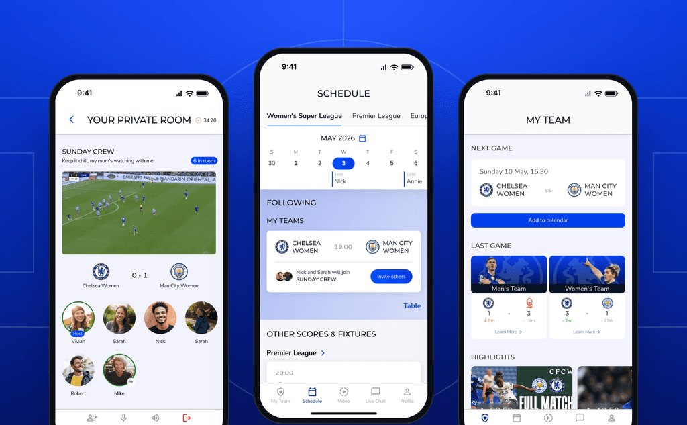
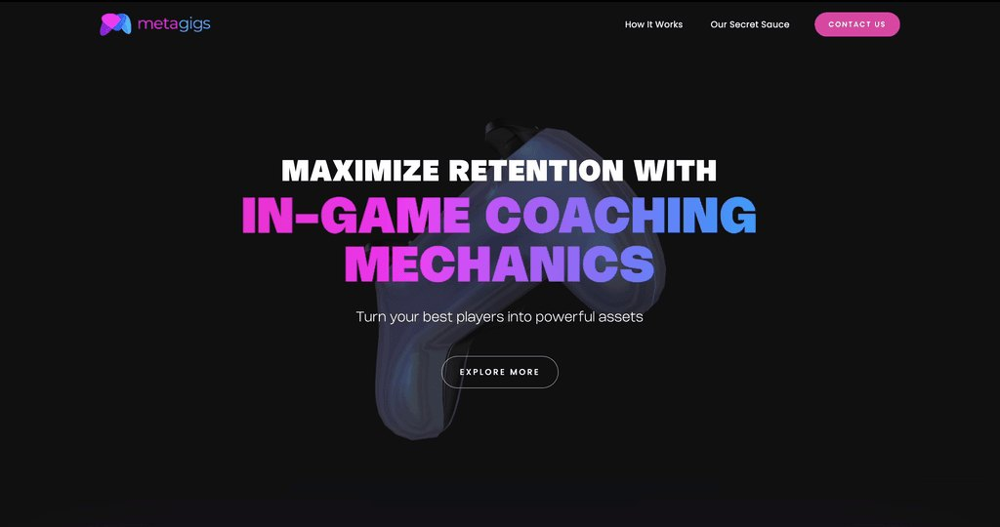

Hey there, I’m Ellie!
A product designer with a project management background.
I enjoy digging into messy problems, planning the path forward, and creating research-backed designs that put users first and meet business goals.
Selected Works

Investigated how a psychology-informed agent affects women's fear of breast screening and willingness to attend.

Redesigned the Sky Sports Scores app to increase the visibility of women's football and reduce the friction of following it.

Equivalence is a platform that supports migrants. I optimized the onboarding flow to reduce the drop-off rate in form completion.

Redesigned the Metagigs brand website to turn complex mechanics into a clear story about the product's value and long-term vision.
How I Work With AI
I use AI to organise raw research data, like interview notes and survey responses, so I can spot patterns faster. But I still run the interviews and decide which insights matter myself.
Tools: ClaudeAfter mapping ideas myself, I use AI to generate more options and challenge my assumptions, so I can find gaps before testing with users.
Tools: Claude, FigjamI design the key screens in Figma first, then build them with Claude Code into working prototypes. This lets me test real interactions instead of static screens.
Tools: Figma, Claude Code, GitHub, VercelBefore testing with real users, I go through my prototypes with the unexpected things people might do, to find where they break. Since I build them with Claude Code, I can fix issues and test again quickly.
Tools: Claude Code